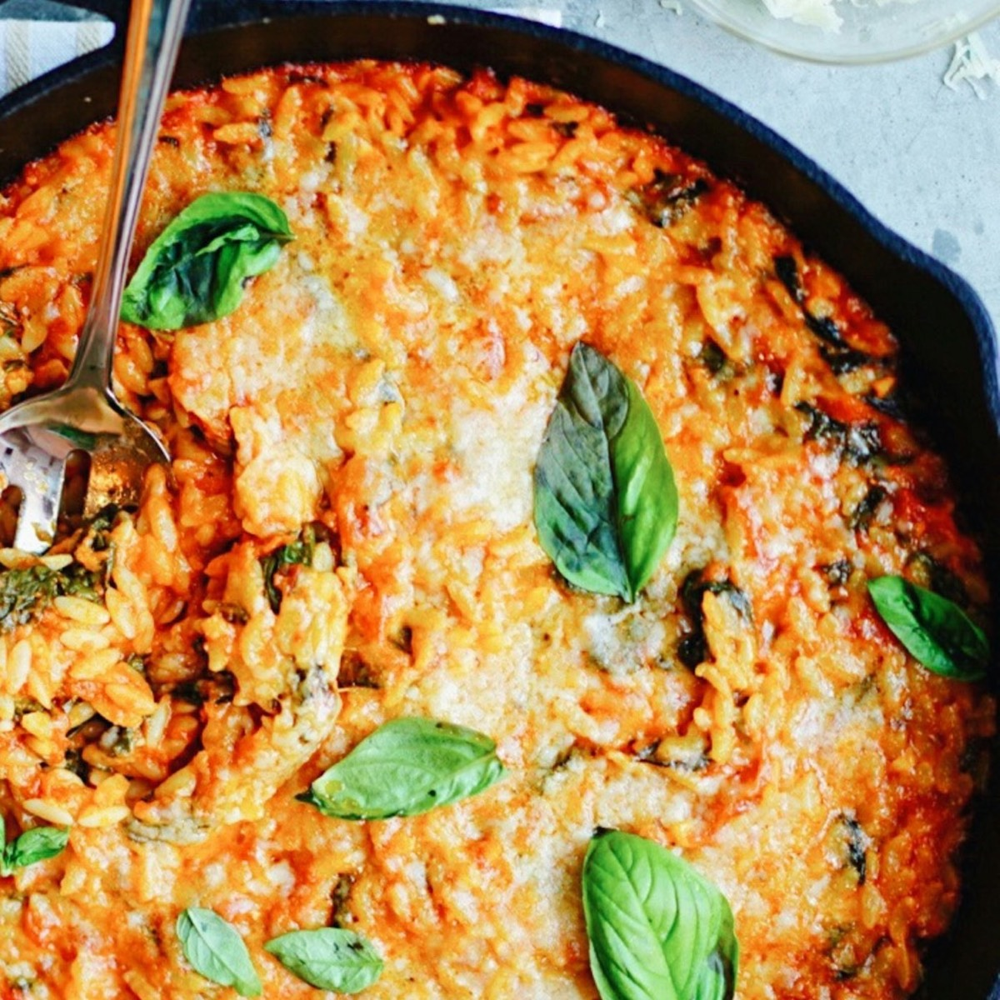

Marry Me Chicken Orzo
Creamy chicken and tiny pasta in a sun-dried tomato sauce. The dish people cook to impress someone.

Stock photo by Megan Bucknall on Unsplash. It shows this kind of dish; yours will look a little different.
- Pot
- one deep pan or wide pot, 10 to 12 inches across (3 quarts or larger)
- Time
- 30 minutes, start to eating
- Hard part
- none. You stir often for ten minutes.
You need
| For one | For two | |
|---|---|---|
| Boneless, skinless chicken thighs | 1 large (about 5 oz) | 2 large (about 10 oz) |
| Sun-dried tomatoes in oil (a jar) | 2 tablespoons, chopped | 1/4 cup, chopped |
| Garlic | 1 clove | 2 cloves |
| Orzo (rice-shaped pasta, in the pasta aisle) | 1/3 cup | 2/3 cup |
| Chicken broth | 1 cup | 1 3/4 cups |
| Heavy cream | 3 tablespoons | 1/3 cup |
| Grated parmesan | 3 tablespoons | 1/3 cup |
| Italian seasoning (a jar of mixed dried herbs, in the spice aisle) | 1/4 teaspoon | 1/2 teaspoon |
| Salt | 1/4 teaspoon | 1/2 teaspoon |
Also: a knife, a cutting board, a wooden spoon, a small bowl, a clean fork, measuring cups and spoons, and an instant-read thermometer if you have one. Without a thermometer you can still check the chicken; step 6 says how. Optional: a pinch of red pepper flakes, a handful of baby spinach.
Contains: wheat, milk. Check your labels.
Swaps. Chicken breast works; cut it the same way. Half-and-half works in place of cream. No Italian seasoning: use dried oregano.
The rest of it. Sun-dried tomatoes: push the ones left in the jar under the oil, close it and keep it in the fridge. Chop a few into scrambled eggs or the next pasta. Heavy cream keeps about a week in the fridge once it is open; stir a spoonful into tomato soup or jarred pasta sauce. Broth: close the carton, keep it in the fridge, and use it within the number of days printed on the carton. Raw chicken you are not cooking today: freeze it flat in a zip-top bag, use it within 3 months, and thaw it overnight in the fridge, not on the counter.
Allergens. Contains wheat (orzo) and milk (cream, parmesan). Broth and sun-dried tomatoes vary by brand, so check every label if you are cooking for someone with an allergy.
Before you turn on the stove
- Peel the garlic and chop it small. A clove is one segment of a garlic bulb. Pull one off, press it with the bottom of a mug until the papery skin cracks, and peel the skin away. Chop the sun-dried tomatoes. Push the garlic and tomatoes into the small bowl.
- Measure the orzo, the broth, the cream and the parmesan.
- Cut the chicken last. Cut it into bite-size pieces, about 1 inch. Sprinkle the salt and Italian seasoning over them. Do not rinse raw chicken; rinsing splashes germs around the sink.
- Wash your hands, the knife and the board with hot water and soap before you touch anything else. Raw chicken should not touch anything you eat uncooked.
Cook
- Heat the pan. Put the pan on medium-high heat, about three quarters of the way up the dial. Add 1 tablespoon of oil from the tomato jar. Wait 1 minute. You should see the oil shimmer and move easily when you tilt the pan.
- Brown the chicken. Add the chicken in one layer. Set a timer for 3 minutes and leave the chicken alone. When it rings, stir and cook 2 minutes more. The pieces should be golden on at least one side. They do not need to be cooked through yet.
- Add garlic and tomatoes. Turn the heat down to medium, the middle of the dial. Add the garlic and sun-dried tomatoes. Stir for 30 seconds. You should smell the garlic. If it turns dark brown, the heat is too high.
- Add orzo and broth. Pour in the orzo and the broth. Scrape the bottom of the pan with the spoon to lift the brown bits; they are flavour. Turn the heat up to medium-high until the liquid bubbles all over.
- Simmer. Turn the heat down to medium-low, about a third of the way up the dial, so it bubbles gently. That gentle bubbling is a simmer. Set a timer for 10 minutes. Stir every 2 minutes, scraping the bottom, because orzo sticks. If the pan looks dry before the timer rings, add 1/4 cup of water. Do not taste anything yet. The chicken is checked first.
- Check the chicken. Do this before you taste anything. Lift the biggest piece of chicken onto the clean board with the clean fork. Push the thermometer into its centre. It is done at 165°F. No thermometer: cut that piece fully open with the clean knife and fork. It should be the same pale, solid colour all the way through, with no pink and no glossy, see-through flesh. Colour is a weaker test than a thermometer, so when you are unsure, cook it longer. If you see pink, or the thermometer reads under 165°F, put the piece back, cook 2 more minutes and check again. Wash the thermometer probe with hot water and soap between checks.
- Check the orzo. Now bite a piece of orzo. It should be soft all the way through, and the liquid should look like a loose sauce, not a soup. If the orzo is still firm, cook 2 more minutes, with 1/4 cup of water if the pan looks dry.
- Finish. Turn off the heat. Stir in the cream and parmesan. If using spinach, stir it in now; it wilts in 1 minute. Taste. Add a pinch of salt if it tastes flat.
If something goes wrong
- Too thick: stir in a splash of water or broth.
- Too thin: leave it on low heat 2 more minutes, stirring. It also thickens as it sits.
- Stuck to the bottom: lower the heat and stir more often next time. What is stuck will soak off.
Leftovers
Put leftovers in a covered container in the fridge within 2 hours of cooking, eat them within 3 to 4 days, and reheat until steaming hot all the way through (165°F if you have a thermometer). The orzo soaks up the sauce in the fridge, so stir in a splash of water or broth when you reheat.
The amounts for two were checked against 3 published versions of this dish; the amounts for one are scaled from them.
In the app this recipe is one step to a screen, with the amounts beside each step and timers that ring when your phone is locked. It is free, with four other complete recipes. First Pot for iPhone and iPad.